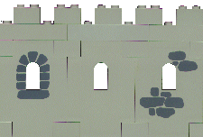

Hey, don't blame me! I saw the heavy proliferation of LEGO® websites out there and realized that I would be much amiss if I didn't set up a little forum of my own. I don't have a heckuva lot to say, though, so you should be able to spend about two minutes checking this site out before moving on to the next one via my selected set of links. Eventually I'll have more pictures and other interesting stuff up, but for now it's a little sparse, sorry.
I think half the reason I set this site up is so I could put a neat Pause Magazine search engine on my website.
I don't really remember a time when we didn't have LEGO toys in the house. I do recall the day, however, that my Mom declared that if she stepped on one more LEGO that she would throw the whole lot out! My brothers and sisters didn't seem terribly interested in preserving their toys, so I did a massive search and rescue and found every LEGO in the house. I threw them all into a box, and protected them from unwary feet. The only sibling that noticed and cared was my little sister, with whom I shared the bounty. We discovered a few things about our toys, including the fact that we were missing a lot of pieces.
I was just a kid, but I knew how to get what I wanted. So I wrote a couple of letters to LEGO, in the hopes that they would have special sets to sell us the missing bits, and was delighted to get responses. These are the responses:

When I went off to college, I didn't forget my passion for LEGO toys. I was on my own (mostly) for the first time, and I had catalogs coming from LEGO on a regular basis. And, on a regular basis, I bought more LEGO toys. Mostly from the Castle system. I also discovered the joy of buying sets of bricks, and bought up tons of the gray bricks in the hopes that I would get enough to build a gigantic castle with a moat and a little town around it. Not surprisingly, my roommates thought I was nuts.
When I moved into a single room on campus, I found that I had a large window with a wide sill. Upon it I built a castle wall, complete with guards, that protected my room from passing peeping-toms. Unfortunately, the LEGO bricks I used in the wall suffered severe sunburns and changed colors. But they did their job right up until I graduated.

Sets in particular that I remember having and enjoying included the Guarded Inn (6067), the Armor Shop (6041), the Camouflaged Outpost (6066), and the Sea Serpent (6057). The only one I really have left is the Sea Serpent: I found it in a box of my college stuff, without it's minifigs but otherwise complete.
My interests broadened while I was in school, and one of the delights I found to occupy my attention and divert my funds was comic books. Yes, comic books. In particular, Aquaman comic books. I became a huge fan of The Swimmer, and when I began to work on the web, I built a whole website devoted to Aquaman. The website grew as time passed, and I consider Aquaman to be my primary hobby.
In the course of searching for Aquaman collectables, I learned of a man who hand-paints LEGO minifigs to look like super-heroes. David Oakes took up my first commission, and I was so pleased with the results that I traded many of my Castle minifigs away to him to make a complete set of underwater heroes and villains.

From Left to Right: Orm (Ocean Master), Dolphin, Current Aquaman, Mera, Original Aquaman, Blue Suit Aquaman, Tempest (with purple eyes), Aqualad (with purple eyes), Tula, Neptune Perkins, Tsunami, Deep Blue, and the Fisherman.
These are now my most precious LEGO toys, and they reside both in my LEGO collection and my Aquaman collection, depending on my mood. If you want something similar, contact David at djoakes@sprynet.com. You can also check out his fast-loading website. Or write to him snailmail: David Oakes, 701 Meadowwood Dr N, Brooklyn Park MN 55444. (And I just want to point out that I'm giving this information to you because I love these minifigs so much. David didn't bribe me to tell you where to find him, but I still feel like I owe him for combining two of my hobbies so perfectly.)
For another take on Superhero LEGO®, check out Dennis Chidley's LEGOtures.
One of the things I always wanted to get from LEGO, but was too realistic to try and even ask for, was a LEGO train. My parents didn't really like LEGO toys (though they sure bought a lot of them!), as they tended to get lost, and damage the vacuum cleaner and various people's feet... and so I didn't even ask for a train. I realize now that if I had, my parents would've done their best to get me one. I'm glad I didn't impose on them back then.

In May of 1998 my grandmother died, and left each grandchild a small sum of money. She had indicated that, if we didn't need the money to pay bills, we were to use it to purchase something we really enjoyed. Being decently well off, I realized that this was my chance. I was going to buy a LEGO train! My husband wasn't keen on the idea, but I went out to RTL (rec.toys.lego) and asked which train to buy. After a little hemming and hawing, I bought set K4565 (set 4565 with a speed regulator) through LEGO S@H (Shop at Home (1-800-453-4652)).
I then downloaded instructions on how to make a steamer from the pieces in that set from Matt's LEGO® Train Depot (look under Instructions for Train Projects: 4565 Steam Locomotive). I then built a train which I now call the Ruby Express (after my grandmother Ruby), using Matt's instructions and modifying them as I went along.
My second train is the only train that I've ever been on myself: The Spirit of Washington Dinner Train. For our fourth anniversary, my husband and I took a trip on this train, and even as I thought about getting a LEGO train, the thought was in the back of my mind that maybe I'd be able to make a Dinner Train out of it once I got it. Giving me even more incentive, I learned about The Pacific Northwest LEGO® Train Club and the shows they've put on in the area. I suddenly had somewhere to show off the Dinner Train once I built it!
The weekend of September 26-27, 1998, I attended my first PNLTC show at the Seattle Center House. The HUGE display was even better than I'd expected it to be. The trains, variety and number, astounded me. My poor Ruby was my only effort, but with all the other trains everyone else had brought, she was hardly alone on the tracks. The event attracted huge crowds of admirers, and we were hard-pressed to answer the many questions we got. All in all it was a great success!
My next show was a charity show in Maple Valley (October 24-25, 1998). Although the display was smaller, the audience was better behaved and more interested in trains specifically. We had a great time, and helped raise a little money for the Senior Center, too. An article about the show, and about PNLTC's own Dan Parker, can be found at The South County Journal's On-Line Archive. Unfortunately, it doesn't include the two pictures printed with the article in the print version of the newspaper.
Next was the Great American Train Show in Puyallup (November 21-22, 1998). The Dinner Train Engine is made its debut, along with a redesigned caboose for Ruby, and some new freight cars. The Dinner Train went over well, despite the lousy job I did on the stickerage (I ended up using some simple mailing labels and coloring in the outlines... it didn't look too bad), but of my two trains Ruby still got the oohs and aahs. The audience was large and very interested in trains, and we had lots of kids. I spent much of my time sitting near the catalog giving out information and explaining to parents how to get a train for their kid by Christmas. To my amusement, a parent would sneak up to me, tell me that their kid was on the other side of the layout playing in the Kid's RailRoad area, and ask me to tell them quick which train to buy.
I next attended the 8th Annual Model Train Show (May 1-2, 1999) and discovered that I really like DUPLO trains, too. Eventually I plan on getting myself one, with some track, and doing something for a show. Maybe an all DUPLO section.
My most recent show (as of this writing) is the Western Washington Fair (known locally as Doing The Puyallup), which runs September 10-26, 1999. I attended the first weekend, and will attend the last weekend. If you click on this link you will see a large picture of the complete layout. I'm the person farthest to the left inside the rail, wearing a vest, over by Tom's incredible mountain module.
So you want to get a LEGO train set, and you don't know where to start? Here's some tips for the absolute beginner.
NOTES: This was updated 17 Sep 1999, and may get out of date if I don't update it as new 1999 sets are released. All prices are current as of 17 Sep 1999, but are subject to change at LEGO S@H's whim. I'm not selling any of these sets, I'm just trying to make the decision easier for people who want to buy.
What you need to run a LEGO train:
With those three items you can run a train, though it'll be kind of boring if you don't add any pieces to the motor piece. You can buy them each separately from LEGO Shop at Home (S@H), some people do (more on that below), but it is easiest to just buy the basic train set.
Buying out of the box:
LEGO tends to have only a few trains available at any one time. One of the trains available will come with all three items you need to get started. Other trains will not come with the speed regulator, and sometimes without the track too. The current basic train set is set #4561 (Railway Express in the US). It comes with a speed regulator, an oval of track, one engine, and some other train pieces. If you want to get up and running quickly, without being concerned about missing some essential piece, buy that set.
Current Train Sets (price is US $ price from S@H catalog, link is to lugnet picture/info):
To get these sets, you can either call LEGO S@H at 1-800-453-4652, or look in your local stores that sell LEGO. Some stores will carry #4561 because it has everything, but most stores will NOT carry any of the other sets. You might be able to find #4561 for cheaper than the S@H price by buying it locally, especially if you're lucky enough to catch it when it's on sale. Although #4561 is a nice set, I myself decided to order #K4565, which is a special offer that has everything you need. In my opinion, #4565 has a better selection of pieces, and is also in colors I prefer.
Building a Train from Scratch:
Say you don't have enough money to buy a full set? It is possible to buy enough pieces to make trains on a budget. The hardest piece to get may just be the speed regulator. When it's not with a set, S@H charges a ridiculous price for it. You can usually find one cheaper by going to rec.toys.lego or the new LUGNET discussion groups and asking if someone will sell you one. If you pay more than $25, you're paying too much. You might also be able to find track and a motor this way, though those are less likely. The absolute least amount of track you need is 16 curved pieces (to make a perfect circle). S@H sells packs of 8 for $13.25 (set #4520), you'll need two. Last is the train motor, which S@H sells for $27.50 (set #5300). So our total is about $79 for the absolute minimum, and this doesn't include cars for your train.
If you want to add a car or two to your train, you can order the wheelsets from S@H for only $3.50 a pair (set #5304) and a pair of couplers to connect cars, also for $3.50 (set #5303). You can build a longer car by using a Wagon Plate (#5309, $3) and Bogieplates (#5302, $2.50). The bogieplates connect into the bottom of the wagon plate and allow the longer car to navigate a curved track. If you need more rail, straight rail also comes in packs of 8 for $13.25 (set #4515) and you can also buy switching rail, a set of two in both directions costs $28.75 (set #4531). New crossing rail is now available, for $10 (set #4519). S@H also offers special track sets, you will want to look at the catalog for pictures and current prices. Just call them at 1-800-453-4652 and ask for a catalog.
As you can see from the prices, LEGO trains are not cheap. They aren't really overpriced, either, if you compare them to other train sets and consider what you get. You won't be getting the detail available with some train sets, but you have a new toy every day. If you don't like your engine, rebuild it! If you need more cars, buy a couple of utility sets and add on. If you think there are limits, just go to the gallery at PNLTC's Website and look at all the examples of creativity available there.
Where to go from here:
Now that you understand the basics, visit some of the websites on my links to find out more. Matt's LEGO® Train Depot is highly recommended as a complete source for information about trains. The PNLTC site has lots of pictures of original designs in its gallery. Kevin Loch's Instruction Scans (BrickShelf.com) include several older train sets, including the classics: #4558 Metroliner, #4564 Freight Rail Runner, and #4547 Club Car (Most of the current range of trains are found in the #4500 range of set numbers. The older train sets are in the #7700 and #7800 ranges). You can search LUGNET for all train sets, out of producation and current, and get a wealth of information there.
I have only covered the current trains here, there are a lot of older sets no longer available. There are also other types of train sets, such as a car crossing, train stations, and extra cars. LEGO Media has just put out a video game called LEGO Loco that allows you to build a city and some limited trains. I've only stratched the surface, I hope you will enjoy finding out about everything else in the world of LEGO Trains.

Do you want to join the Ring? |
[Previous Site] [Next Site] [Skip Previous] [Skip Next] [List Sites] [Random Site] |

{kind=link}
{kind=link}